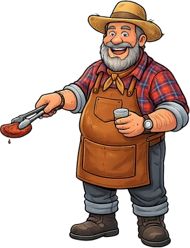

De Minas, com afeto
Ô de casa.
Chegue mais!
O aconchego de Minas, o sabor da nossa brasa e um lugar à mesa esperando por você.
Explorar o cardápioFeito para saborear sem pressa.

UM PEDACINHO DE MINAS.Seu próximo
bom encontro.
Casa Forte, Recife
Pode chegarVamos prosear?
Fale com a gente no WhatsApp